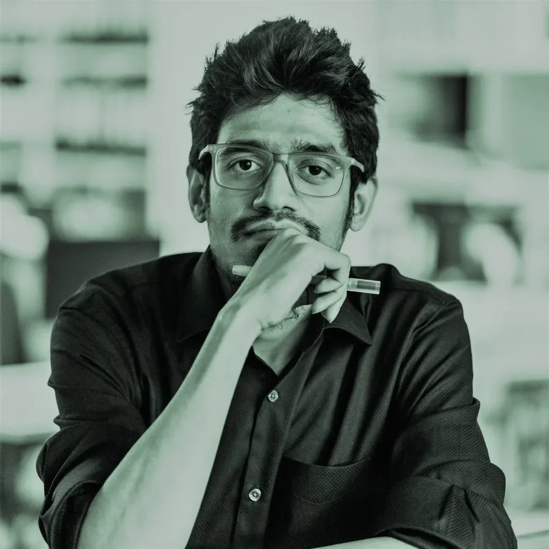

Lebenslauf · Bewerbung um Stelle oder Praktikum
Architekturabschluss (B.Arch, Khulna University) mit über 7 Jahren Praxis im Wohn-, Geschäfts-, Gesundheits- und öffentlichen Bau; Gründer des siebenköpfigen Büros Spaceverse Ltd. in Dhaka. Schwerpunkte: Ausführungsplanung und Bauüberwachung (LP 5 und 8), dazu Vorplanung und Genehmigungsplanung (LP 2 und 4) sowie 3D-Modellierung und Visualisierung in Rhino, Grasshopper und D5 Render. Eingeschrieben im Master Architecture [DIA] an der Hochschule Anhalt; Aufenthaltserlaubnis zum Studium (§ 16b AufenthG). Ich suche eine Stelle oder ein Praktikum in einem Architekturbüro.
Gebäudeplanung, Innenarchitektur, Freiraumplanung und 3D-Visualisierung. Auftraggeber u. a. LGED, Mymensingh City Corporation, Asset Developments und private Bauträger; Leistungen vom Entwurf über die Genehmigungsplanung (RAJUK) bis zur Bauüberwachung.
Hajee Mohammad Danesh Science and Technology University. Lehrveranstaltung „Computer Graphics“ (ARC-222), 2. Studienjahr.
Entwurf und 3D-Visualisierung im Southern Chattogram Development Project (SCRDP), Planungs- und Bauüberwachungsberatung für LGED; 2.260 Stunden.
Detailplanung und Visualisierung; 6.215 Stunden.
Entwurfsabteilung.
Studienbegleitend.
Entwurfskonzept, Detail- und Ausführungsplanung, 3D-Visualisierung, Bauüberwachung (LP 2, 5, 8).
Unterstützung der Projektleitung, Detailplanung, Bauüberwachung (LP 5, 8).
Detail- und Ausführungsplanung, Freiraum-Detailplanung, 3D-Visualisierung, Bauüberwachung (LP 5, 8).
Unterstützung der Projektleitung, Detailplanung, Bauüberwachung (LP 5, 8).
Entwurfskonzept, Detailplanung, Bauüberwachung (LP 2, 5, 8).
Hochschule Anhalt, Dessau-Roßlau. 4 Semester, englischsprachig, 120 ECTS.
Khulna University, Bangladesch. Fünfjähriges Vollstudium, 202,5 Credits. Abschlussarbeit: High Tech Park, Mymensingh (Betreuung Dr. Anirban Mostafa).
In Deutschland nicht kammereingetragen.
Dhaka, November 2026 · Abdullah Al Numan Xyean